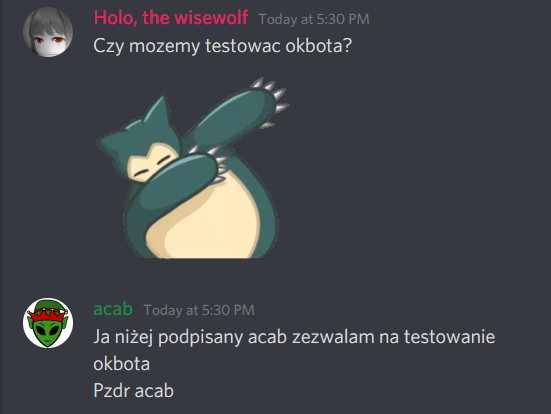
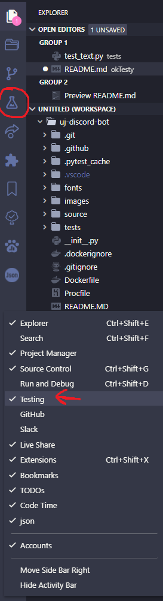
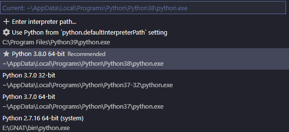
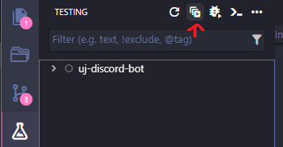

OKTesty - raport
1. Zespół
- Nazwa zespołu: OKTesterzy
- Nazwa w JIRA: OKTesty [OKTF]
- Członkowie:
- Mikołaj Barsznica (@holosiek)
- Paweł Pyciński (@pawel200020)
- Jakub Łukasiewicz (@Jorengarenar)
- Podział prac:
- Mikołaj:
- uzyskanie zgody na testy
- tworzenie przypadków testowych
- manualne testowanie
- testy automatyczne
- wstępne przygotowanie raportu oraz opis testów automatycznych
- Paweł:
- tworzenie przypadków testowych
- manualne testowanie
- opis projektowania testów w raporcie
- Kuba:
- zebranie wymagań funkcjonalnych i niefunkcjonalnych
- tworzenie przypadków testowych
- manualne testowanie
- przeniesienie odnalezionych defektów z Jira do issue trackera projektu FOSS
- raport
- Mikołaj:
2. Testowana aplikacja
-
Nazwa aplikacji:
🆗 Bot -
Link do aplikacji: https://github.com/OK-bot-team/uj-discord-bot
-
Testowana wersja: commit #8802bf29b6d3b00a0d5b0693883e098528dfce23
-
Autorzy: OK-bot-team
Core members:- Karol Sygiet (@skyman503)
- Mikołaj Janusz (@Bubus2)
- Tomasz Dądela (@tdadela)
- Filip Szymeczko (@Kijek3)
-
Opis aplikacji: Bot do Discord'a wykorzystywany na nieoficjalnym serwerze WMIiI UJ do rozmaitych czynności (patrz: Wymagania)
-
Wymagania (na podstawie konwersacji, której zrzut poniżej)
- Funkcjonalne:
- generacja obrazków inspirowanych memem internetowym OK boomer [kluczowe]
- odpowiadanie na zapytania zawierające frazę "bocie" [kluczowe]
- dodatkowo zdefiniowane odpowiedzi związane z "memicznymi" momentami (np. "where zdalne")
- wyszukiwanie frazy w Google i pokazywanie wyników
- gra w kółko i krzyżyk
- przypominajki [ważne]
- Niefunkcjonalne:
- działać nieprzerwanie od manualnego uruchomienia do manualnego zatrzymania [kluczowe]
- nie przekraczanie zużycia zasobów oferowanych przez VPS należący do użytkownika @Kijek3 [kluczowe]
- baza danych nie zawiera krytycznych danych, zatem nie wymaga dodatkowych zabezpieczeń
- Funkcjonalne:
-
Technologie: Python, Discord API
-
Poziom testowalności:
Aplikacja może być testowana- bezpośrednio - na Discordzie (brak możliwości automatyzacji);
- pośrednio - poprzez testy w kodzie, bez użycia Discord'a i jego API (istnieje możliwość automatyzacji).
-
Poziom kontroli nad testami:
W przypadku bezpośrednim pojawia się dużo czynników zewnętrznych - Discord, połączenie internetowe (zarówno klienta, jak i serwera oraz samego bota), funkcjonowanie API Discord'a.
Przypadek pośredni oferuje znacznie większy zakres kontroli (brak wymaganego połączenia z internetem, wykluczenie czynników zewnętrznych), lecz należy liczyć się, że może to inaczej działać w prawidłowym środowisku działania bota.
3. Analiza podstawy testów
-
Zezwolenie testowania

Transkrypcja screenshota:Holo, the wisewolf | Czy możemy testować okbota? acab | Ja niżej podpisany acab zezwalam na testowanie okbota Pzdr acab -
Do testowania będziemy używać:
-
Istniejące testy: w głównym branchu aplikacji w folderze tests/
-
Wyrocznie testowe: wiedza testerów, oczekiwania użytkowników, preferencje autora
4. Zrealizowane i niezrealizowane elementy planu testów
Czy brak większych (tj. takich, które nie były ewentualnie przewidywane) rozbieżności z początkowym planem?
| 4.1 | 4.2 | 4.3 | 4.4 | 4.5 | 4.6 | 4.7 | 4.8 | 4.9 |
|---|---|---|---|---|---|---|---|---|
Jedyne zgrzyty pojawiły się w przypadku próby wstawienia testów automatycznych do repozytorium projektu FOSS
4.1. Podejście do testowania (strategia testowa)
Zdecydowaliśmy się na podejście dynamiczno-konsultacyjne, ponieważ wszyscy członkowie naszego zespołu są aktywnymi użytkownikami aplikacji, a także mamy stały kontakt z twórcami bota, więc mogliśmy na bieżąco konsultować się co do wyników testów.
4.2. Poziomy testowania
W związku z dalszymi punktami, testowaliśmy głównie na poziomach systemowym i akceptacyjnym.
4.3. Typy testów
Głównym typem zastosowanych testów są testy czarnoskrzynkowe funkcjonalne.
4.4. Metryki (miary) wykorzystane w procesie testowym
- ilość napisanych przypadków testowych
- ilość wykonanych testów manualnych
- ilość przypadków testowych zakończonych wynikiem negatywnym
- ilość wykrytych defektów
- ilość zgłoszonych issues na repozytorium GitHub
- ilość naprawionych defektów przez zespół FOSS
- ilość odrzuconych ("wontfix") defektów przez zespół FOSS
- procentowa proporcja naprawionych/odrzuconych/otwartych issues
- procentowa proporcja issues zaraportowanych przez OKTesty do całości
- czas od zgłoszenia issue do jakiejkolwiek reakcji zespołu FOSS
4.5. Obszary aplikacji podlegające testom (przedmiot testów, elementy testowe)
Przede wszystkim testowany będzie front-end (element interaktywny bota) na serwerze Discord.
Jeżeli starczy czasu, przetestowany zostanie również sam kod bota.
4.6. Obszary aplikacji nie testowane
Nie będziemy testować zmiany tła odpowiedzi bota dla konkretnego użytkownika, gdyż jest to obsługiwane przez zewnętrzny system (do którego też nie posiadamy dostępu).
4.7. Środowisko testowe, uprzęże testowe, osprzęt itd.
Bota będziemy testować:
- na nieoficjalnym serwerze WMIiI UJ na Discordzie,
- na serwerze testowym grupy FrozenT,
- czatując bezpośrednio z botem.
Software używany do testów automatycznych:
4.8. Analiza ryzyka, priorytetyzacja testów
Na podstawie rozmów z koordynatorem projektu FOSS oraz własnych doświadczeń, ustaliliśmy iż praktycznie wszelkie defekty związane z pracą bota będą wyłącznie lekką niedogodnością.
Baza danych stanowi praktycznie funkcję pliku konfiguracyjnego (bez wrażliwych i istotnych danych).
Zatem w pierwszej kolejności skupiamy się na komendach dostępnych dla użytkownika.
4.9. Harmonogram prac
- 2021-11-05 – wysokopoziomowy plan testów
- 2021-12-10 – przypadki testowe
- 2021-01-14 – przeprowadzenie testów automatycznych i manualnych
- 2021-01-21 – raport
5. Projektowanie testów
Każda funkcjonalność
Zdecydowaliśmy się na protestowanie całej aplikacji przy pomocy testów czarnoskrzynkowych technikami testowania losowego oraz testowania opartego na przypadkach użycia.
-
"ok" odpowiedzi [OKFT-2]
Jest to najważniejsza funkcjonalność bota, dlategoż zdecydowaliśmy przetestować ją szczegółowo.
Począwszy od prostych testów odpowiadania na dowolny niepusty string (OKFT-14), po przez obsługę emoji z Discorda (OKFT-15), skończywszy na testach z pustym polem (OKFT-9). -
odpowiadanie na "bocie" [OKFT-3]
Ta funkcjonalność również jest kluczowa dla użytkowników🆗 Bota, zdecydowaliśmy się na szczegółowe testowanie.
Począwszy od prostych testów na dowolny niepusty string (OKFT-36) poprzez wklejenie do do komendy hieroglifów (OKFT-44) czy rosyjskiej cyrylicy (OKFT-46) skończywszy na sprawdzeniu poprawności odczytywania i wypisywania nicków osoby wywołującej komendę (OKFT-48). -
komenda
remindme(ustawienie timera) [OKFT-4]
Jest to również znacząca funkcja dla użytkowników, zatem zdecydowaliśmy się na napisanie szczegółowych przypadków testowych.
Sprawdziliśmy podstawowe funkcjonalności takie jak przypomnienie po określonym okresie czasowym (OKFT-16) oraz czułość bota na wielkość liter w jednostce czasu (OKFT-22) -
otrzymywane linki do query Google'a [OKFT-62]
Jest to funkcjonalność oprogramowania o niskim znaczeniu, napisaliśmy 2 szczegółowe przypadki testowe.
Pierwszy (OKFT-65) sprawdza działanie komendy w przypadku jednowyrazowego stringa z koleji drugi sprawdzał zachowanie oprogramowania przy wklejeniu tekstu z utworu "Pan Tadeusz" (OKFT-65) -
komenda
tic- rozgrywka kółko krzyżyk [OKFT-6]
Ze względu na niskie znaczenie funkcjonalności wśród użytkowników zdecydowaliśmy się na szczegółowe testowanie lecz obejmujące 4 przypadki testowe.
Sprawdzaliśmy różne metody wygrania (OKFT-53) oraz łączenie jej z komendąbocie(OKFT-60). Ponadto funkcjonalność została przetestowana przy pomocy analizy dziedzinowej sprawdzając każdy możliwy sposób zakończenia rozgrywki. -
komendy pomocy "?" [OKTF-26]
Ze względu na znikomą przydatność komendy wśród użytkowników, zdecydowaliśmy napisać po jednym szczegółowym przypadku testowym dla każdej komendy, sprawdzającym, czy bot odpowiada wyświetleniem pomocy do danej funkcji.
6. Implementacja testów automatycznych
Odpalanie testów:
Sposób I - za pomocą VS Code:
-
Otwieramy VS Code
-
Otwieramy folder repozytorium uj-discord-bot poprzez
File -> Open Folder... -
Po otworzeniu, upewniamy się, że mamy dostępną zakładkę
testing(powinna się pojawić w lewym menu "fiolka" chemiczna); Jeśli nie ma, klikamy na menu prawym przyciskiem i wybieramy z listy "testing"
 -
Dodatkowo, ustawiamy domyślny
python interpreterna dole po lewej okna, najlepiej na wersje Python 3.8+
 -
Wciskamy Ctrl+Shift+P, następnie wpisujemy
PyTesti wybieramy pozycjęconfigure tests
Po uruchomieniu wybieramy pozycjęPyTest, a następnie foldertests -
Od teraz możemy wybrać zakładkę
testing(fiolka) i odpalać testy poprzez przyciskRun Tests

Sposób II - za pomocą linii poleceń
- Odpalamy terminal / wiersz poleceń (cmd.exe, sh, Bash lub kompatybilne)
- Wchodzimy do folderu repozytorium
uj-discord-bot(zazwyczaj poprzez komendęcd) - Wpisujemy komendę
python -m pytest tests/(lubpy -m pytest tests/) by odpalić wszystkie testy.
Zasięg testowania (testowane funkcjonalności automatycznie)
- "ok" odpowiedzi
- odpowiadanie na "bocie"
- reagowanie na "kiedy/where zdalne"
- otrzymywane linki do query Google'a
Sposób implementacji testów
Testy czarnoskrzynkowe - tworzone na bazie wiedzy testera oraz dokumentacji zawartej w kodzie (ale nie bazowane na samym kodzie).
Wszystkie testy automatyczne zawarte są w folderze tests/ w roocie projektu*
Każda funkcjonalność bota została testowana w osobnym pliku, np. testy na odpowiedzi na frazę bocie zawarte są w pliku bocie_response_tests.py.
Każdy plik zawiera podtesty, które testują różne przypadki opisane poprzez nazwę testu.
* Drobne problemy
Niestety, z "powodów" niżej załączonych jako zrzuty ekranu, Pull Request nie został zmergowany do głównego repozytorium.
Dlatego znajdziemy je pod następującym adresem URL: https://github.com/holosiek/uj-discord-bot/tree/main/tests
Powody niezaakceptowania PR (wybrane):

7. Wykonanie testów
Testy manualne
Ponieważ zastosowaliśmy podejście dynamiczno-konsultacyjne, to staraliśmy się wykonywać testy na bieżąco.
Taka medota ma dwie główne zalety:
- odkrywanie coraz bardziej specyficznych przypdaków testowych i edge-casów
- minimalizacja backlogu
| metryka | liczby |
|---|---|
| ilość napisanych przypadków testowych | 35 |
| ilość wykonanych testów manualnych | 35 |
| ilość przypadków testowych zakończonych wynikiem negatywnym | 13 |
| ilość wykrytych defektów | 10 |
| ilość zgłoszonych issues na repozytorium GitHub | 8 |
| ilość naprawionych defektów przez zespół FOSS | 2 |
| ilość odrzuconych ("wontfix" / "it's a feature") defektów przez zespół FOSS | 3 |
| procentowa proporcja naprawionych/odrzuconych/otwartych zgłoszonych issues | 0% / 38% / 62% |
| procentowa proporcja issues zaraportowanych przez OKTesty do całości | 100% |
| czas od zgłoszenia issue do jakiejkolwiek reakcji zespołu FOSS | patrz §8 |
Jak widać z powyższej tabeli, udało nam się wyjkonać wszystkie zaprojektowane testy.
Trzynaście spośród nich nie zakończyło się pozytywnie, ale kilka wykryło ten sam problem (np. issue #29 zostało wykryte przez 3 przypdaki), dlatego liczba defektów wynosi 10.
Z kolei do issue trackera projektu FOSS zostało wprowadzone tylko 8 z nich, gdyż 2 zostały naprawione przez pojedynczy Pull Request dokonany przez jednego z członków naszego zespołu. Są to jedyne naprawione dotychczas defekty, ale ponieważ nie zostało to dokonane przez zespół FOSS, to nie zostało uwzględnione w metryce porównawczej statusy issues.
Warto zwrócić uwagę na dość nieregularny czas reakcji (jakiejkolwiek) zespołu FOSS na zgłoszone problemy.
Testy automatyczne
Środowisko używane do testów automatycznych
- VS Code [1.63+]
- Windows 11 Pro 21H2
Wynik testów automatycznych
============================= test session starts =============================
platform win32 -- Python 3.8.0, pytest-6.2.5, py-1.11.0, pluggy-1.0.0
rootdir: F:\Python\uj-discord-bot\tests, configfile: pytest.ini
collected 9 items
tests\bocie_response_tests.py .F [ 22%]
tests\google_response_tests.py .. [ 44%]
tests\ok_response_tests.py F. [ 66%]
tests\zdalne_response_tests.py .FF [100%]
================================== FAILURES ===================================
________________________ standard_bocie_responses_test ________________________
def standard_bocie_responses_test():
> assert get_text("cze�� bocie", "bejbe") == ("cze�� bejbe", 0)
E AssertionError: assert ('cze�� bejbe', 3) == ('cze�� bejbe', 0)
E At index 1 diff: 3 != 0
E Use -v to get the full diff
tests\bocie_response_tests.py:12: AssertionError
______________________________ no_response_test _______________________________
def no_response_test():
assert get_text("") == (None, 0)
assert get_text(" ") == (None, 0)
assert get_text("A") == (None, 0)
assert get_text("ok") == (None, 0)
assert get_text("okser") == (None, 0)
assert get_text("ok ser") == (None, 0)
assert get_text("ok ser") == (None, 0)
> assert get_text(";ok;") == (None, 0)
E AssertionError: assert ('', 0) == (None, 0)
E At index 0 diff: '' != None
E Use -v to get the full diff
tests\ok_response_tests.py:11: AssertionError
_______________________ zdalne_and_bocie_response_test ________________________
def zdalne_and_bocie_response_test():
> assert get_text("kiedy zdalne bocie", "Holo, the Wisewolf") == ("kiedy zdalne Holo, the Wisewolf", 0)
E AssertionError: assert ('kiedy zdaln... Wisewolf', 3) == ('kiedy zdaln... Wisewolf', 0)
E At index 1 diff: 3 != 0
E Use -v to get the full diff
tests\zdalne_response_tests.py:11: AssertionError
_______________________ standard_zdalne_responses_test ________________________
def standard_zdalne_responses_test():
> assert get_text("kiedy zdalne") == (ZDALNE_ANSWER, 0)
E AssertionError: assert ('Nie ma �adn...studenci.', 3) == ('Nie ma �adn...studenci.', 0)
E At index 1 diff: 3 != 0
E Use -v to get the full diff
tests\zdalne_response_tests.py:14: AssertionError
============================== warnings summary ===============================
C:\Users\Holo\AppData\Local\Programs\Python\Python38\lib\site-packages\aiohttp\helpers.py:107
C:\Users\Holo\AppData\Local\Programs\Python\Python38\lib\site-packages\aiohttp\helpers.py:107: DeprecationWarning: "@coroutine" decorator is deprecated since Python 3.8, use "async def" instead
def noop(*args, **kwargs): # type: ignore
-- Docs: https://docs.pytest.org/en/stable/warnings.html
=========================== short test summary info ===========================
FAILED tests\bocie_response_tests.py::standard_bocie_responses_test - Asserti...
FAILED tests\ok_response_tests.py::no_response_test - AssertionError: assert ...
FAILED tests\zdalne_response_tests.py::zdalne_and_bocie_response_test - Asser...
FAILED tests\zdalne_response_tests.py::standard_zdalne_responses_test - Asser...
=================== 4 failed, 5 passed, 1 warning in 0.54s ====================
8. Raport o incydentach/awariach/defektach/requestach
-
[#29] Bot responds to message containing only spaces and/or line breaks
-
[#30] Image contains gibberish when message contains custom emoji
- wykryte przez testy: [OKFT-19]
-
[#31] Support for unicode characters is lacking
-
[#32] Bot should respond to standalone call
bocie- wykryte przez testy: [OKFT-69]
-
[#33] Bot should respond to standalone
;ok;- wykryte przez testy: [OKFT-13]
-
[#34] Punctuation after "bocie" is not kept
- wykryte przez testy: [OKFT-67]
-
status w czasie wontfix 15h 30 min
-
[#35] Empty nick or non-standard ("mojibake") characters causes inconsistency in behaviour
- wykryte przez testy: [OKFT-48]
-
[OKTF-7] [#36] [Feature request] Special handling of "ok joren"
-
status w czasie considered 0h 24 min
-
-
[OKFT-70] Bot informuje o byciu w stanie gotowości, lecz nie działa
Bot wyświetlał niewłaściwie informacje o byciu w stanie gotowości, gdyż informacja o zainicjalizowaniu była przed faktycznym zainicjalizowaniem, dając fałszywy sygnał bycia gotowym.- [fix] przesunięcie informacji o byciu gotowym po zainicjalizowaniu oraz owrapowanie inicjalizacji w
try/exceptw celu lepszego wychwycenia problemów na przyszłość -
status w czasie merged 1h 9 min
- [fix] przesunięcie informacji o byciu gotowym po zainicjalizowaniu oraz owrapowanie inicjalizacji w
-
[OKFT-71] Bot nie informuje, że token nie jest zarejstrowany jako zmienna środowiskowa
Bot nie dawał informacji o braku tokenu w zmiennych środowiskowych, błędnie się inicjalizując.